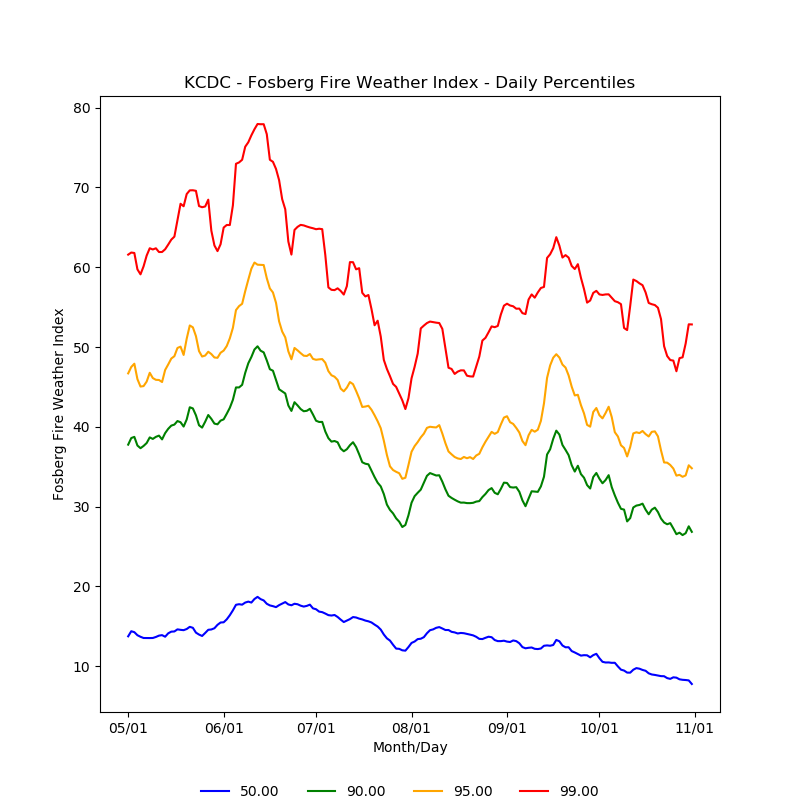

These summaries were derived from records archived by Synoptic Data PBC. While the entire state of Utah is prone to wildfires, many of these stations were selected due to their proximity to areas with higher risk.
Percentile graphs highlight the typical conditions (50th percentile or median) observed from the 6-hr. running mean near that time of year based on the available data record. For the Fosberg Fire Weather Index (FFWI), the frequency of extreme winds is shown by the 90th, 95th, and 99th percentile values.

| Station Name | Station ID | Network Type | First Data Date | Elevation (ft) |
| Cedar City Municipal Airport | KCDC | NWS/FAA | 1997-01-01 | 5581 |